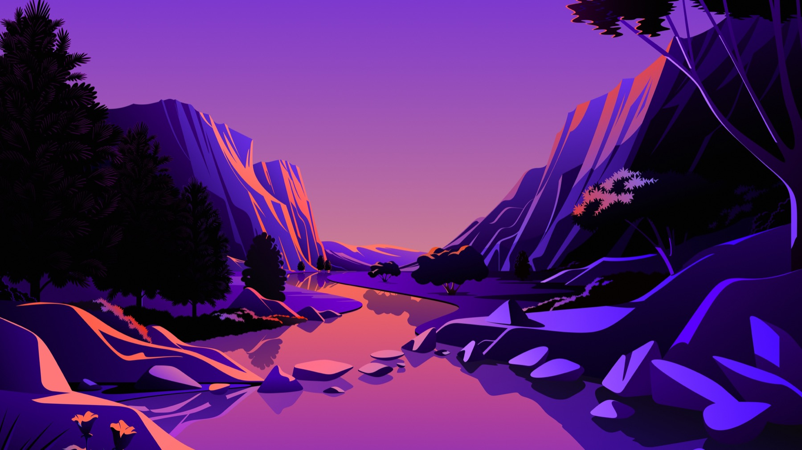
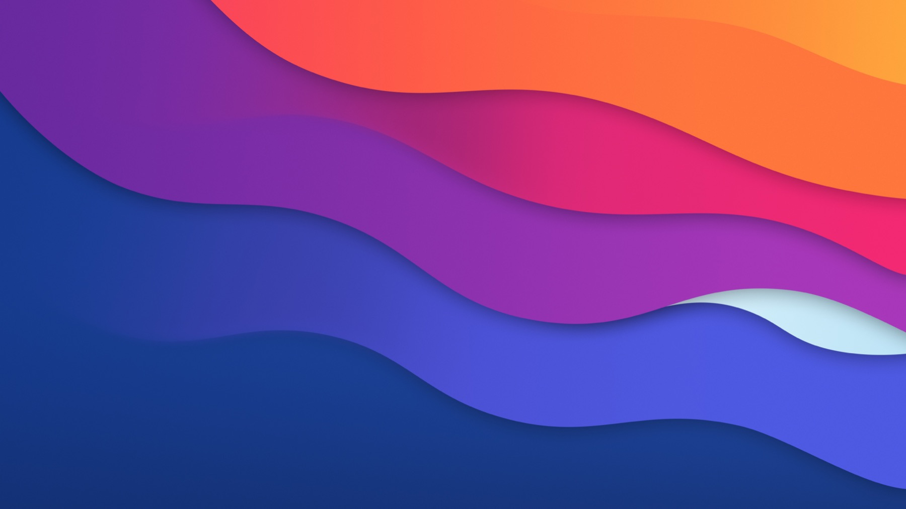

ABCFITNESS STUDIO
01 · FEATURED
ABC Fitness Studio
A responsive multipage client site with an accessible product gallery, memberships, and contact experience.
- HTML
- CSS
- JavaScript
- Accessibility
Open to internships & collaboration
I’m Rachel—a software engineering student building thoughtful, human-centered experiences across the web, cloud, cybersecurity, and AI.
HELLO, WORLD.
I'm preparing for an accelerated B.S. Software Engineering / M.S. AI Engineering pathway while building the foundations through focused coursework. I care about software that is useful, accessible, and quietly delightful.
My customer-service background taught me to listen carefully, communicate clearly, and stay composed under pressure. Those are engineering skills too—and I bring them to every project.
BUILT WITH INTENTION
A responsive multipage client site with an accessible product gallery, memberships, and contact experience.
An explainable, useful AI tool—currently taking shape.
Thoughtful schemas, useful queries, reliable information.
A SMALL DIGITAL WORLD
Navigate Rachel's learning landscape with WASD or the arrow keys. The tiny anime-inspired guide adds a little personality while keeping the focus on the work.
Guide online · Use arrow keys


CURRENTLY STUDYING
I’m focusing on practical programming, computer science fundamentals, cloud literacy, Java, and agile software delivery.
Programming fundamentals, problem solving, and clean code habits.
Core computer science concepts and software engineering foundations.
Professional Scrum Master I preparation for agile software teams.
CLF-C02 cloud fundamentals, services, security, and pricing concepts.
Object-oriented programming and Java language fundamentals.
Framework-based application structure and backend development patterns.
CURRENTLY LOADING...
HTML · CSS · JavaScript · Python · SQL
Git · GitHub · AWS · Linux · VS Code
Responsive design · Networking · Cybersecurity · Relational databases · OOP · Scrum
Intelligent systems · Responsible AI · Production machine learning
ONE MORE THING...
I’m growing my experience one thoughtful project at a time. If you’re working in software, cloud, cybersecurity, or AI, I’d love to connect.